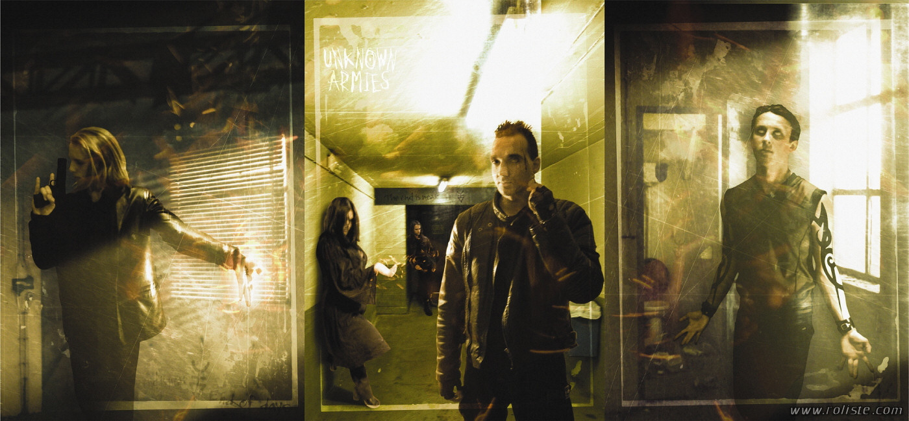

Первые шаги по миру

Уровень 1: Оккультный Мейнстрим
Уровень 2: Оккультный андеграунд
Это умозрительное место, где происходят реальные вещи. Свободное объединение людей, которые знают о ритуалах и ковенах. Они видели м'агию вблизи и они знают, что в этом мире есть больше, чем крест и полумесяц. Но, подобно конспирологам или уфологам, мало кто из андеграунда приходит к общему мнению. Оккультный андерграунд разделен на множество различных ветвей, и кроме обычных банд, есть ребята, которые игнорируют даже такое клише, как ковен. Существуют различия в воззрениях на космологию, природу м'агии и существование бессмертия. Причём каждый может придерживаться сразу нескольких точек зрения. Однако, даже когда их заставляют разделяться, люди оккультного андеграунда сплачиваются. И вот почему.
• Социальный Надзор
Если ты думаешь, что можешь быть человеком-армией, твои дела плохи. Члены андеграунда работают сообща, когда дело касается вопросов выживания в обществе. Или проблемой займутся Спящие.
• Связи
Намного удобнее позвонить Охотникам на приведений, чем заморачиваться самому. Есть множество людей, которые могут рассказать о паранормальном то, чего ты не знаешь.
Порномант не может заниматься своим мумбо-юмбо, используя кофейную чашку Кеннеди, зато Синяка она приведёт в восторг. Информация и артефакты вращаются внутри андеграунда, формируя теневую экономику.
• Безопасность
Знание того, что подросток, отжигающий на скейте, может превратить твои потроха в желе, полезно в том случае, если он поцарапал твою тачку. Когда все знают, кто и на что способен, вы все в большей безопасности друг от друга.
• Право на Хвастовство
Твоя мама не погладит тебя по головке за то, что ты получил Великий заряд или нашёл 6 глаз Самуэля Льюиса. В андеграунде же ты можешь получить восхищение или страх единственной аудитории, которая достойна уважения.
• Одиночество
Иногда становится попросту тяжело следовать по пути саморазрушающей веры в одиночку. Ты слишком странный, ты вбиваешь в себя гвозди, или не можешь пропустить повтор фильма, даже если видел его уже сотню раз. Другие представители оккультного андеграунда могут выглядеть так же вызывающе или неправильно даже для тебя, но, как минимум, они готовы прийти на твою следующую вечеринку.
Уровень 3: Андерграундные Течения
Две крупнейших области оккультного андеграунда заняты адептами и аватарами. Каждый из них имеет свой взгляд на мир и, конечно же, все они по-своему правы. У каждого свой андеграунд.
Течение Адептов
Течение Адептов
Большинство адептов - опущенные, шизанутые затворники. Это сумасшедшие старики, валяющиеся на улицах, или мутные типы, живущие в ржавеющем школьном автобусе на свалке. У них есть своё, искажённое мировоззрение, дурацкая одержимость, и они продолжают делать всё по-своему, становясь всё более и более ненормальными, пока даже медицина не становится бессильной. Не тыкай в них палкой, и они не тронут тебя.
Но есть и те, кто стремится к обществу, особенно если живут в городах. Конечно, их друзья - это люди, чей стиль жизни соответствует их мировоззрению. Дипсоманты тусуются вместе с другими алкашами, пусть даже и не адептами по сути. Нарко-алхимики участвуют в наркотрафике. Адепты с различными одержимостями не имеют ничего общего, пока долг или необходимость не заставят их объединиться. Они до сих пор ищут себе подобных, также, как и все остальные в оккультном андеграунде.
Андеграунд адептов характеризуют как собрание слухов, подозрений и пафоса. Конечно, порой возникает настоящая дружба или, что ещё реже, сообщество, члены которого конфиденциальны достаточно, чтобы сохранять аполитичность и секретность. В таких удачливых городах существуют настоящие клубы людей, которые проводят время вместе, потому что они этого хотят, потому что у них есть общие цели и ценности и потому что, заканчивая встречу, они чувствуют себя лучше, чем до неё. Но таких городов очень мало.
Течение Аватаров
Течение Аватаров
Сознающие себя аватары встречаются так же часто, как и адепты, может быть даже чуть чаще, поскольку инкарнации, следующие одному архетипу, имеют намного больше общего, чем адепты одного Пути. Скрытая сила аватаров имеет менее экстремальные проявления, а также способствует смешению их с обычным обществом. И раз у них меньше нужды прятаться от толпы, а также, к примеру, ватиканских отрядов инквизиции, то у них меньше нужды прятаться и друг от друга.
Местные течения складываются на основе того, как инкарнации представляют себе источник своих сил. Верующие образуют церковный приход, а хиппи собираются на Кислотных Тестах в ожидании откровения свыше. Есть группы, которые считают, что они экстрасенсы, присоединившиеся к аспектам коллективного бессознательного. В истоках их деятельности нет религиозных мотивов, но они могут быть столь же фанатичными, как и верующие в Мессию. Единственная очевидная социальная опасность для аватаров состоит в том, что когда они растут в силе и приближаются к своему архетипу, они становятся зависимы от него в ущерб своей собственной личности. И, как следствие, когда они видят угрозу своему архетипу, они расценивают её как прямую угрозу себе. Низкоуровневые инкарнации имеют гораздо больше шансов удержаться в течении, чем те, кто на вершине горы. По некоторым причинам могущественным аватарам очень сложно разделять с кем-либо свой путь.
Встреча потоков
Встреча потоков
Течения адептов и инкарнаций сталкиваются друг с другом внутри огромного оккультного андеграунда и даже внутри еще более огромного оккультного мейнстрима. Но они редко распознают друг друга как различные традиции, одна из которых основана на Хаосе, а другая - на Порядке. Каждая из них чаще видит другую как несовершенную или испорченную версию самой себя.
Течения адептов и инкарнаций сталкиваются друг с другом внутри огромного оккультного андеграунда и даже внутри еще более огромного оккультного мейнстрима. Но они редко распознают друг друга как различные традиции, одна из которых основана на Хаосе, а другая - на Порядке. Каждая из них чаще видит другую как несовершенную или испорченную версию самой себя.Адепты, встречающие аватаров, часто полагают их такими же адептами - они же могут изменять реальность, правда? Или хотя бы манипулировать ею в своих целях. Если аватар расскажет адепту свои теории о радиоподобной настройке на силу каналов, то адепт вряд ли это оценит. Скорее всего он пожалеет эту глупую инкарнацию, которая, похоже, нашла какой-то ущербный Путь м'агии с очень маленьким доменом.
Таким же образом аватары, как правило, представляют адептов как кого-то, следующих действительно странному архетипу или же тех, кто сильно заблуждается относительно реальной природы вещей, экстравагантными чудиками наподобие Блаватской или Кроули. С точки зрения аватара эго адепта слишком сильно замутняет его связь с космосом.
Всё это предполагает, что представитель любого из течений будет откровенен по поводу своей силы. Чего почти никогда не происходит. Тайна - это сила, и открытие любой информации, которую можно использовать, как твою слабость или ограниченность, это акт величайшего доверия или величайшей глупости. Именно поэтому Ахиллес никому не говорил о своей дурацкой пятке. Следовательно, большинство людей в андеграунде крайне скрытны, когда вопрос касается принципов работы их м'агии. Зачастую не только инкарнации и адепты не могут понять истинной природы друг друга, но и очень немногие адепты могут понять адепта другого Пути. Точно так же аватары, встретившие себе подобных, часто полагают, что незнакомец исказил или неправильно понял их личный архетип. Они могут даже не понимать самого факта существования других архетипов, настолько же могущественных, как их собственный.